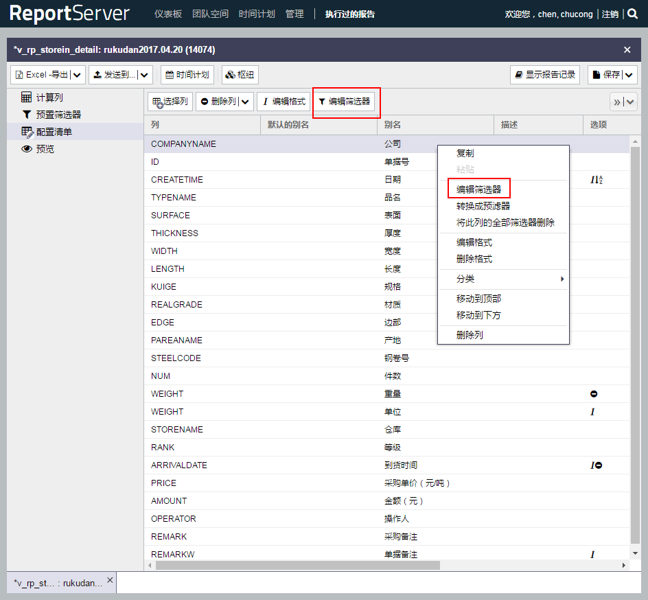

启动
打开软件

启动服务

启动网址
点击软件的 Go to Application 按钮 或者 在浏览器中打开localhost地址

登录
管理员账号密码为：admin123456
绑定数据源
打开管理 - 数据源
在数据源里面，右键插入关系数据库
填写相关信息，点击 申请 按钮确定，并通过 测试连接 测试是否成功链接数据库
新建报表
在管理模块中打开 报表管理器
在报表管理器中插入一个动态列表

填写相关信息，并绑定数据源，根据需要填写数据库查询
打开/导入报表
可以直接通过报表管理器双击相关报表来打开

也可以在 团队空间 模块；选择所在团队，点击 导入报告钮，选择要导入的报告；选中报告，右键选择导入方式（新建的报告只有作为参照导入）

报表操作
选择列
选择需要的字段

填写别名
编辑筛选器
点击 编辑筛选器 按钮，或者右键需要筛选的列，或者双击该列

可以选择是否剔除空数据
分类（排序）

编辑格式
根据需要点击 编辑格式 按钮，或者右键需要筛选的列，编辑合适的格式；可以选择空数据的格式

聚集
用于计算，不同的数据类型，会有不同的聚集方式

小计
与聚集合用，由于聚集，数据会默认一首列作为分组将数据聚集起来进行计算，显示的数据就只有聚集起来的数据，若想看到每个分组的详细数据，这时就要用到小计功能
首先点击 小计 按钮

双击空白地方进入选择需要小计的列
选择需要小计的列，按 申请 按钮确认

这样就可以看到小计的列了，按 申请 按钮确认
但是。。。经常一不小心就出错了，因为当使用小计功能是，过滤器只能存在于 聚集列 或者 分组列（首列，或者小计列），这时候就要使用 预筛选器 了。